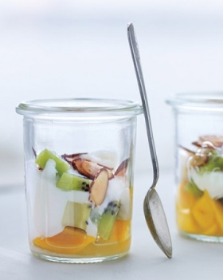

Tropical Fruit Parfait

In a small glass -- or a jar with a lid, if you're on the go -- layer 1/2 cup fruit cut into 1/2-inch cubes (kiwis, mangos, and pineapples are nice) with 1/4 cup plain low-fat yogurt. Top with 1 tablespoon toasted sliced almonds. Makes 1 serving (100 calories)